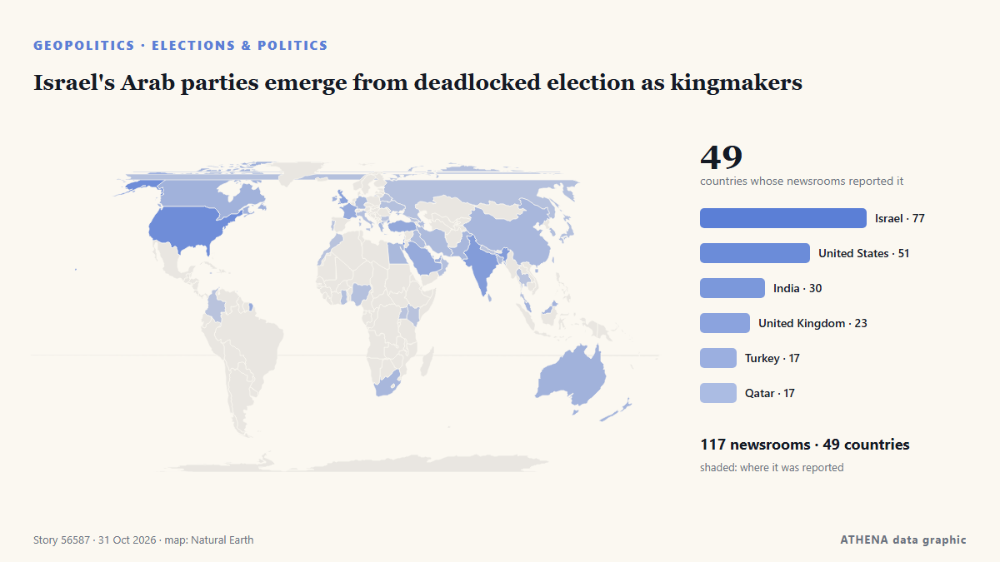

Israel's Arab parties emerge from deadlocked election as kingmakers

LONDON: It is a measure of how much is at stake in Tuesday’s legislative election in Israel, and how finely balanced the outcome might be, that a record 22,000 police officers have been deployed in… de Arab News
Relayé de façon indépendante par 117 médias dans 49 pays depuis le 24 oct. ; premier à l'annoncer : Responsible Statecraft ; la couverture continue de s'étendre. ATHENA juge le risque accru (5.1/10), surtout en raison de la gravité des dommages décrits et de sa portée géographique et sectorielle. La confiance est de 90 % (élevée) : 117 médias indépendants le confirment, avec une fiabilité moyenne des sources de 74 %.
Pourquoi c'est important: Les évolutions de sécurité et de diplomatie peuvent déplacer alliances, échanges et marchés bien au-delà des pays directement concernés.
Ce qui a changé : 134 nouveaux articles de 71 rédactions dans les 24 heures jusqu'au 31 oct..
Premier titre : Israel counts votes with Netanyahu’s future on the line
Les titres sont affichés en anglais, tels que publiés.
En un coup d'œil
Sélectionné, noté et rédigé par la méthodologie publiée d'ATHENA. Aucun rédacteur n'intervient sur un événement en particulier. Comment il est produit ›
| 24 Oct 04:05 UTC | 1 |
|---|---|
| 24 Oct 16:05 UTC | 0 |
| 25 Oct 04:05 UTC | 0 |
| 25 Oct 16:05 UTC | 0 |
| 26 Oct 04:05 UTC | 1 |
| 26 Oct 16:05 UTC | 3 |
| 27 Oct 04:05 UTC | 9 |
| 27 Oct 16:05 UTC | 21 |
| 28 Oct 04:05 UTC | 35 |
| 28 Oct 16:05 UTC | 35 |
| 29 Oct 04:05 UTC | 44 |
| 29 Oct 16:05 UTC | 136 |
| 30 Oct 04:05 UTC | 127 |
| 30 Oct 16:05 UTC | 36 |
| 31 Oct 04:05 UTC | 7 |
| 29 Oct 15:43 UTC | 5.1 |
|---|---|
| 29 Oct 22:07 UTC | 4.7 |
| 29 Oct 22:24 UTC | 5.2 |
| 29 Oct 22:32 UTC | 4.7 |
| 29 Oct 22:48 UTC | 5.2 |
| 29 Oct 23:01 UTC | 4.7 |
| 29 Oct 23:18 UTC | 5.2 |
| 29 Oct 23:20 UTC | 4.7 |
| 29 Oct 23:27 UTC | 5.2 |
| 29 Oct 23:45 UTC | 4.7 |
| 29 Oct 23:46 UTC | 5.2 |
| 30 Oct 06:41 UTC | 4.7 |
| 30 Oct 06:44 UTC | 5.2 |
| 30 Oct 06:48 UTC | 4.7 |
| 30 Oct 07:24 UTC | 5.2 |
| 30 Oct 07:53 UTC | 4.7 |
| 30 Oct 08:06 UTC | 5.2 |
| 30 Oct 18:55 UTC | 4.7 |
| 30 Oct 22:11 UTC | 5.5 |
| 31 Oct 08:22 UTC | 5.1 |
Pourquoi ces chiffres
Importance
Risque
Confiance
La couverture : qui l'a annoncé, et quand
titre tel que publié · ouvre l'original- Responsible Statecraft · États-Unis · United StatesWhat Israel's razor thin elections mean for Gaza and Iran
- Responsible Statecraft · États-Unis · United StatesMeet the ex-Biden official working hard to rewrite history on Gaza
- Central Banking · Royaume-Uni · United KingdomBank of Israel rebukes Netanyahu over sanction evading crypto plan
- Arab News · Arabie saoudite · Saudi ArabiaIsrael’s election could reshape its politics, without changing its course on Palestine
- Haaretz (English) · Israël · IsraelMy son is back from Gaza. Now it's time to take our country back
- NPR · États-Unis · United StatesA quick guide to Israel's high-stakes election
- Anadolu Agency (English) · Turquie · TurkeyIsrael counts votes with Netanyahu’s future on the line
- Türkiye Today · Turquie · TurkeyIsraelis begin voting as Netanyahu faces toughest election challenge in years
- The Jerusalem Post · Israël · IsraelActivists urge voters returning to Israel to save emergency hotline numbers in case of arrest
- Kyiv Post · UkraineWhat Israel’s Election Could Change for Ukraine and Relations With Russia
- The Jerusalem Post · Israël · IsraelSohlberg bars UTJ turnout reports from polling stations; watchdog urges enforcement
- Haaretz (English) · Israël · IsraelThese Palestinians woke up on Election Day still unsure whether to vote or boycott
- The Diplomat · Japon · JapanThe Future of India-Israel Ties After Israel’s Election
- Tehran Times · IranIsraeli voters chose between ‘rabid yellow dogs and ravenous jackals’
- Haaretz (English) · Israël · IsraelNetanyahu has a sword hanging over his head – and Eisenkot can wield it
- The New Arab · INTBen-Gvir scrambles door-to-door for votes as Arab turnout surges
- Haaretz (English) · Israël · IsraelWe found the few Israelis who aren't voting – and are willing to talk about it
- The National · Émirats arabes unis · United Arab Emirates'Call me': Israeli right-wing candidates go door to door pleading for votes
- Haaretz (English) · Israël · IsraelNetanyahu films campaign ad at Israeli city hall in violation of election law
- Haaretz (English) · Israël · IsraelInside the propaganda machine: How Netanyahu's campaign messages spread
- SABC News · Afrique du Sud · South AfricaIsrael election will not change fate of Palestinian people: Mbeki
- NDTV · Inde · IndiaMassive Arab-Israeli Poll Turnout, Netanyahu's "End To Jewish State" Charge
- France 24 English · FranceIbrahim Abu Ahmad on Israeli election: 'Crucial for Arab citizens to have ally in Jewish community'
- The New York Times (World) · États-Unis · United StatesIsraeli Voting Ends After Strong Turnout With No Clear Winner
- The New York Times (World) · États-Unis · United StatesTwice before, Netanyahu was ousted then returned to power.
- Times of India · Inde · IndiaElection Commision keeps RTI applicant waiting for reply
- Arab News · Arabie saoudite · Saudi ArabiaIsrael commits ‘mediacide’ to conceal its atrocities in Gaza, UN expert says
- Middle East Eye · INTPalestinian voter mobilisation a ‘truly historic development’, analyst says
- France 24 English · FranceBibi's moment of truth: Israel votes in first general election since October 7 attacks
- Haaretz (English) · Israël · IsraelMuted mood on Tel Aviv's streets as voters react to Israel's election exit polls
- Haaretz (English) · Israël · IsraelHow will Netanyahu try to reframe his defeat as a huge victory
- Haaretz (English) · Israël · IsraelNetanyahu's scare campaign against Arab voters ended up pushing them to the polls
- Haaretz (English) · Israël · IsraelDecoding Israel's election: This is the jargon you need to know
- NPR · États-Unis · United StatesPartnerships between ICE and local police surge, report finds
- Trinidad Express · Trinité-et-Tobago · Trinidad and TobagoAustin Immigration Lawyer Hosts Livestream To Discuss Immigration News & Updates
- Mehr News (English) · IranVIDEO: Boy bids farewell with sister after shooting by Israel
- The Jerusalem Post · Israël · IsraelAfter years of war, division, Israelis vote in record numbers to shape their future - editorial
- The Jerusalem Post · Israël · IsraelAnti-Netanyahu bloc vows not to let chance to replace government slip away
- Times of India · Inde · India'Whole tide turned': Trump takes credit for Netanyahu's showing in Israel elections
- The Independent · Royaume-Uni · United KingdomTrump takes credit for Netanyahu election performance after endorsing Israeli prime minister